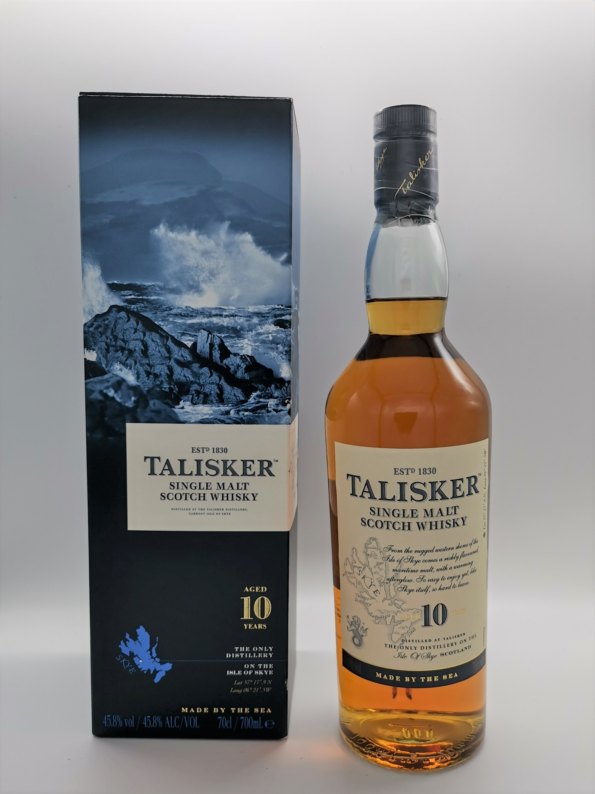
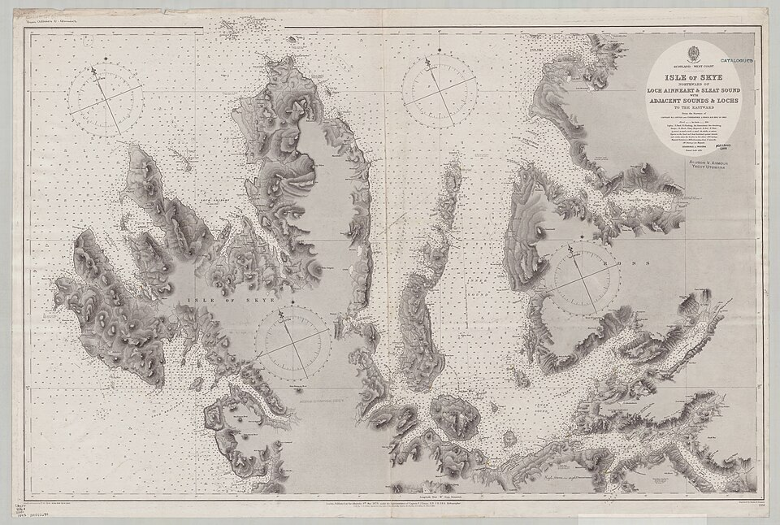

Label eras

Dates are approximate. Packaging may overlap. Era 00 is the earlier 8-year-old.
Isle of Skye
Admiralty chart, 1878.
Sources & notes
An independent reference based on bottle codes, collector records and auction listings.
References
Whiskybase, Caledonian Collectables, Master of Malt and Diving for Pearls. Eras 00–01 are also checked against The Whisky Exchange. Other dates remain unverified; market variations may differ.
Image credits & licences
Exhibits 00 and 01: bottle photographs © The Whisky Exchange, reproduced as reference images; these are not covered by the Creative Commons licences below. Source records: 1980s Talisker 8 and 1990s Talisker 10 map label.
Via Wikimedia Commons: Talisker Distillery © Repsol (CC BY-SA 2.0); Admiralty Chart No. 2551, 1878 (public domain); Standing Stone and first blue/cream bottles © Benutzer:Urs (CC BY-SA 3.0); Made by the Sea bottle © Keeezawa (CC BY-SA 4.0); orange-label bottle © Datenralfi (CC BY-SA 4.0). Images are displayed uncropped in the bottle viewer; the chart is cropped in the island section.
About
A personal archive. Unaffiliated with Talisker or Diageo. Brand names belong to their owners.